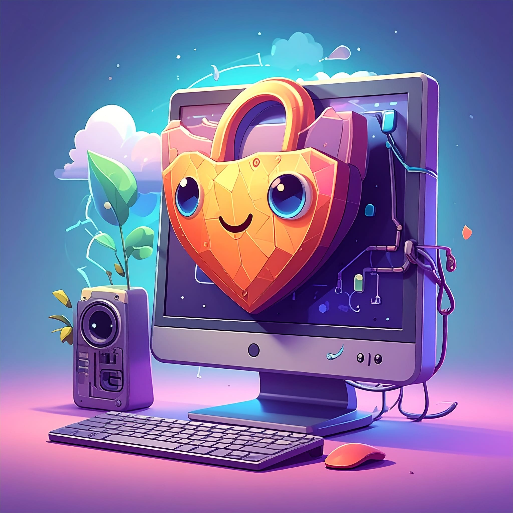
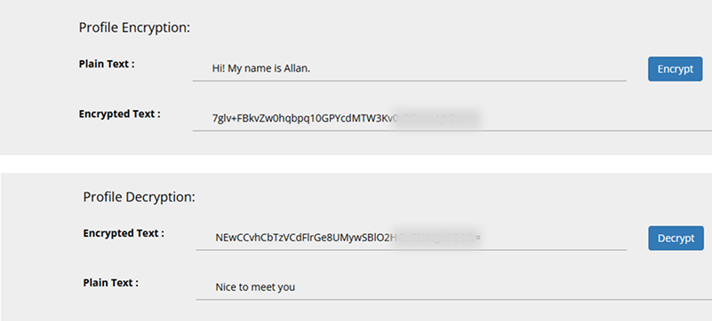

Utility → Product · Case Study
Enago Lock: protecting academic data, one manuscript at a time

Background
In 2023, a senior editor at Enago flagged a recurring problem: high-value manuscripts sometimes contained sensitive personal data — patient info, grant IDs, unpublished results. As remote work grew, authors grew hesitant to share documents involving grants or sensitive data. Without in-person safeguards, universities worried about editorial mishandling, threatening the traditional editing model.
I collaborated with editors, clients, and tech teams to assess the issue, spoke with users, mapped workflows, and found that insecure data handling was eroding author trust in traditional editing.
Context
A casual exchange of documents feels harmless. But multiply it across hundreds of submissions a month and you get:
- Sensitive data floating across unencrypted personal inboxes
- No access logs or audit trails
- Risk of accidental forwarding or leaks
For any institution managing dozens of such papers monthly, this was a ticking time bomb. I analyzed submission volumes and workflows to identify leak points, then used the data to show leadership this was a product problem, not an operational hiccup.
The challenge
Balance editors' need for speed and simplicity with universities' demand for enterprise-grade security. My role was to design a solution that met both — without slowing the editorial process down.
Solution: from patch to platform
Enago's tech team already had a small internal tool — a basic encrypt/decrypt utility to obscure author names and emails for internal transfers. It worked, but it was clearly duct tape over a growing leak.
Here's what we did:
- Created a risk map of the editing workflow with the tech team
- Laid out key requirements: access control, time limits, audit logs
- Introduced the
.enagofile extension as a visible marker so users could see their files were protected
We went from encrypting text strings to protecting intellectual property at the institutional level.
How it works
- Authors upload files via the Inquiry form
- Enago encrypts the document into a
.enagofile - The file is viewable only through a secure preview
- Editors get time-bound access keys
- Admins (and authors) receive full access logs and traceability
I mapped the full user journey with engineering to ensure the system was both secure and seamless. Security couldn't feel like extra work — it had to sit inside the existing workflow.

Impact & value proposition
| Benefit to | Value proposition |
|---|---|
| Authors | Peace of mind knowing their intellectual property is secure end to end. |
| Universities | Compliance with data privacy laws and improved institutional reputation. |
| Enago | A secure, integrated workflow that deepened publishing partnerships. |
I helped launch Enago Lock and onboard university clients. By positioning it as both a differentiated feature and a trust-builder, we kept existing clients happy and grew institutional relationships — and the order-form drop-off rate fell 16.8%.